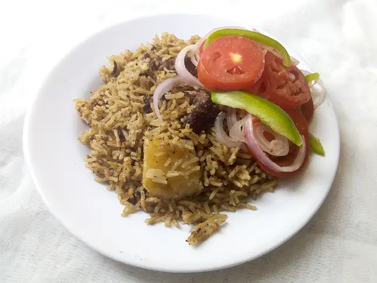

Beef Pilau Recipes

Description
Pilau is a flavorful rice dish that is popular in many regions,
especially in East Africa, the Middle East, and South Asia.
It is made by cooking rice with spices, broth, and sometimes
meat or vegetables, giving it a rich aroma and deep taste.
Often cooked with beef, chicken, lamb, or just vegetables for a vegetarian version.
Especially in Kenya and Tanzania, pilau is a staple dish, often served at gatherings,
weddings, and festive occasions.
Ingredients
- 2 cups basmati rice
- 1/4 kg beef, prepared boiled
- 3 potatoes, chopped
- 2 tbs Whole Pilau Masala
- 1 large onion
- 1 grated ginger and 1 grated garlic
- 1 pinch salt
- 3 tbs cooking oil
- 3 mugs boiling water
Steps
- Prepare the ingredients together to avoid wasting time
- Fry onion till golden brown
- Add garlic and ginger and fry. But don't let it burn
- Add the whole Pilau masala and cook till the aroma fills the house
- Add your pre-boiled beef and fry till golden brown
- Add your potatoes and cook for ten minutes but do not cook fully
- Add rice and salt and mix well. Then add boiling water and let it cook till the water has reduced
- Reduce heat then turn the Pilau and cover tightly. Let it cook perfectly
- Serve with Kachumbari
- Fry onion till golden brown
- Fry onion till golden brown
- Fry onion till golden brown